DQA Report User Guide
The DQA report is standardized measuring and reporting tool that indicates the level of quality in a batch of messages. Messages can be batch together under various criteria and conditions. The two most common batches are:
- Submission Batch Messages that have been sent together, for example in a single file, are grouped together in a submission batch.
- Weekly Batch Every week, all data submitted is group together into a consistent weekly batch.
The DQA report measures three specific areas:
- Completeness Are all required and most of the recommended fields being sent as expected?
- Quality Are there errors or warnings in the received data?
- Timeliness Are reports of vaccination administration being received on time?
At each level a score is generated, and these scores are grouped together until a final overall score is obtained. At each level the score can be interpreted as follows:
- 90-100 Excellent, measured area meets and exceeds expectations.
- 80-89 Good, measured area meets expectations.
- 70-79 Okay, measured area meets expectations, improvements may be need to be made.
- 60-69 Poor, measured area is below expectations, improvements need to be made.
- 0-59 Problem, measured area does not meet minimum expectations and improvements must be made.
The DQA report is built to not contain patient identifiable information, so there is not a sufficient level of detail in this report to determine the exact source of many errors or see the original data that was sent in. The role of this report is to provide a summary of data quality and not to support all troubleshooting needs. This allows this report to be shared more freely with all interface participants without needlessly exposing patient identifiable information.
DQA Report Step Through
Report Heading
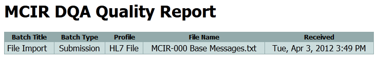The title of the report identifies the name of the facility and gives a table summary of the data being considered.
- Batch Title The description for this batch.
- Batch Type The type of batch, indicates if this is a weekly report or a received file report.
- Profile Label from submitter profile.
- File Name File name this was submitter under, if data was submitted via file.
- Received The date and time of of the last received message in this batch.
Ready for Production
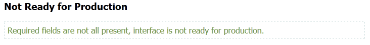The first details of quality is a simple statement that indicates if the interface is ready for production on based on meeting basic requirements for completeness. There are two possible descriptions shown here:
- Ready for Production All, or almost all (>99%) of the required fields are all populated.
- Not Ready for Production Not all required fields have values.
In this example, the DQA reports that the batch is not ready for production because one of the required fields is missing. Details of this are given in the report farther down.
Scoring Summary
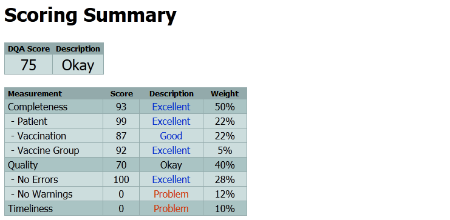This section gives the overall data quality score and the contribution in the subsections towards the overall score. In this example, an okay score was given because while the completeness score is high the quality score is low because every message contained a warning and the data was not received in a timely manner.
Data Received
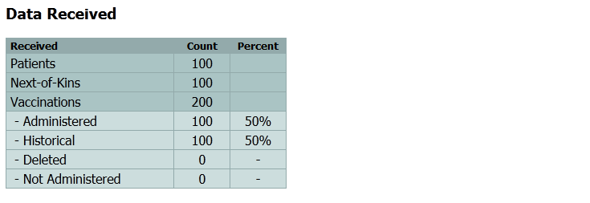This table lists the total number of types of records received. The data quality report was built to produce good results on large sets of data of at least 100 separate immunization events. The following fields are counted:
- Patients The number of patient records. Essentially this is the same count as the number of messages since one patient is sent per message.
- Next-of-Kins The total number of parent/guardian/responsible-party persons that were sent. (In HL7 this is sent in the NK1 segment.) Note: a single message can contain 0 or more NK1 segments so the total number of NK1 can be less than or greater than the number of patients.
- Vaccinations The total number of vaccination reports sent. The DQA report does not auto-merge duplicates so this number reports
the total unduplicated count.
- Administered The total number of reports of admnistered vaccinations received. These do not include records marked for deletion or as not administered.
- Historical The total number of reports of historical vaccinations, vaccinations that were not administered by this submitter.
- Deleted The total number of vaccinations reported as should be deleted in the receiving system.
- Not Administered The total number of vaccinations that were identified as not being administered.
Processing Status
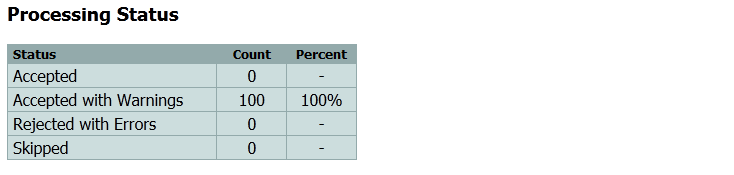Summarizes the final action taken for each received message:
- Accepted No warning or error issues were identified. The message was accepted with no comments.
- Accepted with Warnings No error issues were identified, but warnings were found. The message was accepted but the warnings should be reviewed.
- Rejected with Errors At least one error issue was identified, and possibly additional warnings. The message was rejected and will not be accepted until the error conditions are fixed.
- Skipped The message did not have errors, but was indicated for skipping. The message was not processed but is not considered an error. This message represents data that the IIS does not expect to or need to receive.
Message Header Details
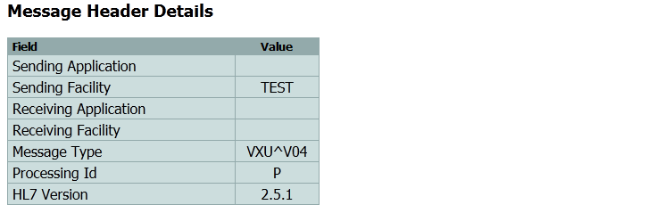This table gives the field values that were found in the MSH segment of the first message in the batch. Typically the header values of all the other messages are similar but this table will not indicate if these header values are typical for all messages. This information is shown here for quick reference and because it should not contain any patient identifiable information.
- Sending Application The contents of MSH-3.1.
- Sending Facility The contents of MSH-4.1.
- Receiving Application The contents of MSH-5.1.
- Receiving Facility The contents of MSH-6.1.
- Message Type The contents for MSH-9.1 & MSH-9.2.
- Processing Id The contents of MSH-11.
- HL7 Version The contents of MSH-12.
Completeness
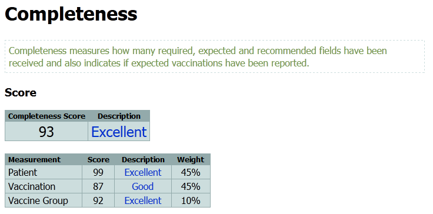Provides summary and score of how complete the data is based on the requirements and expectations of the IIS. The score is calculated from three areas of measurement:
- Patient Measures how all often patient level fields (found in PID, PD1, PV1, & NK1 segments) that are required, expected and recommended are sent.
- Vaccination Measures how often vaccination level fields (found in ORC, RXA, RXR, and OBX segments) that are required, expected and recommended are sent.
- Vaccine Group Measures the type of vaccinations sent to see if all regularly administered vaccinations are being sent. (For example, if none of the messages contain an MMR this score will be decreased as this is a vaccination that is normally and regularly administered, and when it is missing the batch is considered to be less complete. )
Patient Completeness
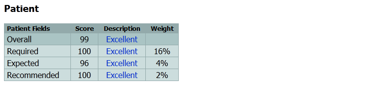Provides a summary of the completeness at the patient level. Fields are categorized by the IIS into four measuring categories:
- Required Fields must be sent in every message, every time. Empty or null values are not expected or allowed. For a system to go into production the expectation is that all required fields will be valued at least 99% of the time.
- Expected Fields are expected to be sent normally. Empty or null values are expected only occasionally.
- Recommended Fields are recommended to be sent but some values may never be sent. The IIS requests that the submitter to work towards supporting and sending the fields in this area.
- Optional This field is no listed on the score because optional fields do not change the completeness score. These fields are recognized by the IIS as possible values that can be submitted but the IIS is not asking that these values be sent. These values may or may not be processed or handled by IIS.
Patient Completeness Required
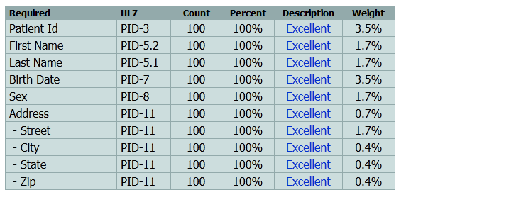Lists the fields that are required by the IIS. The columns indicate:
- Required Short description for the field.
- HL7 A short reference to where in an HL7 message this data should be placed. Please see official IIS HL7 for further information.
- Count The number of times this field was valued.
- Percent The percent out of the total opportunities for this field to be valued.
- Description A human readable description indicating the status of this field. Please note that this status is for the field only. A single field may indicate a "Problem" but that does not mean that the entire batch has a problem. There are big problems and little problems and this label only indicates that a problem exists at this particular point. A problem in a required field is a significant issue when compared with a problem in a recommended field.
- Weight The total weight that this score has towards the overall score for this batch. In this example, if Patient Id were not ever valued, the score would drop by 3.5% points. This can be used to gauge the relative importance of fields to the IIS.
Patient Completeness Expected
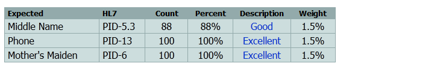Lists the fields that are expected by the IIS. Normally these fields should have values in them, but there are legitimate circumstances where the field may have no value. For example, a phone number may be considered as expected while some patients may not have a phone number recorded because they have no phone number. The columns indicate:
- Expected Short description for the field.
- HL7 A short reference to where in an HL7 message this data should be placed. Please see official IIS HL7 for further information.
- Count The number of times this field was valued.
- Percent The percent out of the total opportunities for this field to be valued.
- Description A human readable description indicating the status of this field. Please note that this status is for the field only. A single field may indicate a "Problem" but that does not mean that the entire batch has a problem. There are big problems and little problems and this label only indicates that a problem exists at this particular point. A problem in a required field is a significant issue when compared with a problem in a recommended field.
- Weight The total weight that this score has towards the overall score for this batch. In this example, if Middle Name were not ever valued, the score would drop by 1.5% points. This can be used to gauge the relative importance of fields to the IIS.
Patient Completeness Recommended
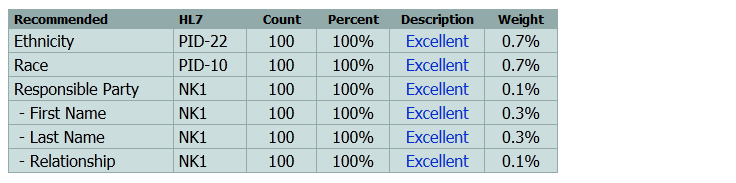Lists the fields that are recommended by the IIS to be sent. The IIS understands that some of these may not be sent for various reasons, and requests that future work focus on supporting these fields. Missing these fields would not normally prevent an interface from being put into production. The columns indicate:
- Recommended Short description for the field.
- HL7 A short reference to where in an HL7 message this data should be placed. Please see official IIS HL7 for further information.
- Count The number of times this field was valued.
- Percent The percent out of the total opportunities for this field to be valued.
- Description A human readable description indicating the status of this field. Please note that this status is for the field only. A single field may indicate a "Problem" but that does not mean that the entire batch has a problem. There are big problems and little problems and this label only indicates that a problem exists at this particular point. A problem in a required field is a significant issue when compared with a problem in a recommended field.
- Weight The total weight that this score has towards the overall score for this batch. In this example, if Ethnicity were not ever valued, the score would drop by 0.7% points. This can be used to gauge the relative importance of fields to the IIS.
Patient Completeness Optional
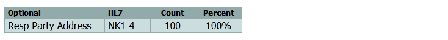Lists the fields that are optional. The IIS doesn't expect these values to be sent, and may choose to receive them, use them, or ignore them. They are listed in the report for completeness but do not affect the final score. The columns indicate:
- Optional Short description for the field.
- HL7 A short reference to where in an HL7 message this data should be placed. Please see official IIS HL7 for further information.
- Count The number of times this field was valued.
- Percent The percent out of the total opportunities for this field to be valued.
Vaccination Completeness
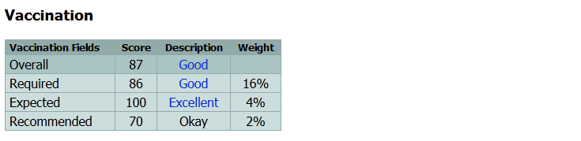Provides a summary of the completeness at the vaccination level. Fields are categorized by the IIS into four measuring categories:
- Required Fields must be sent in every message, every time. Empty or null values are not expected or allowed. For a system to go into production the expectation is that all required fields will be valued at least 99% of the time.
- Expected Fields are expected to be sent normally. Empty or null values are expected only occasionally.
- Recommended Fields are recommended to be sent but some values may never be sent. The IIS requests that the submitter to work towards supporting and sending the fields in this area.
- Optional This field is no listed on the score because optional fields do not change the completeness score. These fields are recognized by the IIS as possible values that can be submitted but the IIS is not asking that these values be sent. These values may or may not be processed or handled by IIS.
Vaccination Completeness Required
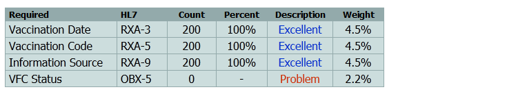Lists the fields that are required by the IIS. The columns indicate:
- Required Short description for the field.
- HL7 A short reference to where in an HL7 message this data should be placed. Please see official IIS HL7 for further information.
- Count The number of times this field was valued.
- Percent The percent out of the total opportunities for this field to be valued.
- Description A human readable description indicating the status of this field. Please note that this status is for the field only. A single field may indicate a "Problem" but that does not mean that the entire batch has a problem. There are big problems and little problems and this label only indicates that a problem exists at this particular point. A problem in a required field is a significant issue when compared with a problem in a recommended field.
- Weight The total weight that this score has towards the overall score for this batch. In this example, if Vaccination Date were not every valued, the score would drop by 4.5% points. This can be used to gauge the relative importance of fields to the IIS.
Vaccination Completeness Expected
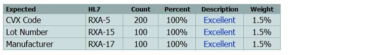Lists the fields that are expected by the IIS. Normally these fields should have values in them, but there are legitimate circumstances where the field may have no value. The columns indicate:
- Expected Short description for the field.
- HL7 A short reference to where in an HL7 message this data should be placed. Please see official IIS HL7 for further information.
- Count The number of times this field was valued.
- Percent The percent out of the total opportunities for this field to be valued.
- Description A human readable description indicating the status of this field. Please note that this status is for the field only. A single field may indicate a "Problem" but that does not mean that the entire batch has a problem. There are big problems and little problems and this label only indicates that a problem exists at this particular point. A problem in a required field is a significant issue when compared with a problem in a recommended field.
- Weight The total weight that this score has towards the overall score for this batch. In this example, if the CPT Code was sent instead of a CVX code, the score would drop by 1.5% points. This can be used to gauge the relative importance of fields to the IIS.
Vaccination Completeness Recommended
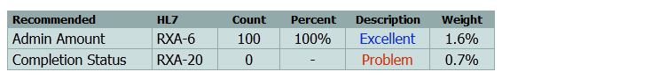Lists the fields that are recommended by the IIS to be sent. The IIS understands that some of these may not be sent for various reasons, and requests that future work focus on supporting these fields. Missing these fields would not normally prevent an interface from being put into production. The columns indicate:
- Recommended Short description for the field.
- HL7 A short reference to where in an HL7 message this data should be placed. Please see official IIS HL7 for further information.
- Count The number of times this field was valued.
- Percent The percent out of the total opportunities for this field to be valued.
- Description A human readable description indicating the status of this field. Please note that this status is for the field only. A single field may indicate a "Problem" but that does not mean that the entire batch has a problem. There are big problems and little problems and this label only indicates that a problem exists at this particular point. A problem in a required field is a significant issue when compared with a problem in a recommended field.
- Weight The total weight that this score has towards the overall score for this batch. In this example, if Admin Amount were not ever valued, the score would drop by 1.6% points. This can be used to gauge the relative importance of fields to the IIS.
Vaccination Completeness Optional
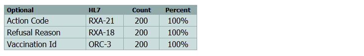Lists the fields that are optional. The IIS doesn't expect these values to be sent, and may choose to receive them, use them, or ignore them. They are listed in the report for completeness but do not affect the final score. The columns indicate:
- Optional Short description for the field.
- HL7 A short reference to where in an HL7 message this data should be placed. Please see official IIS HL7 for further information.
- Count The number of times this field was valued.
- Percent The percent out of the total opportunities for this field to be valued.
Vaccine Group Expected
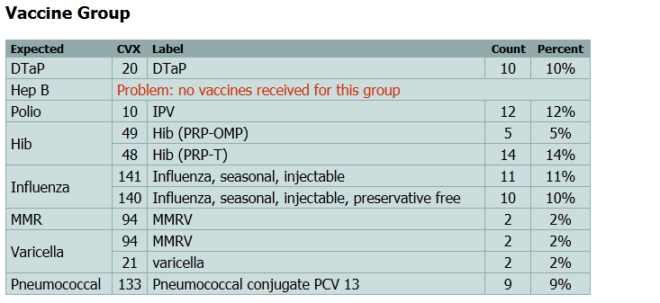This table lists all the expected vaccine groups and the vaccinations that were found to match that group. Use this table to help identify vaccinations that may be inadvertantly excluded from the submission file. For example, the table above shows that no Hep B vaccinations were included. The question now is, were Hep B vaccinations given? If so why are they not reported in this batch. Please note that this section only shows vaccinations that were administered and excludes historical, deleted, or non-administered vaccinations.
Vaccine Group Recommended
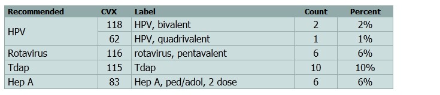This is similar to the vaccine group accepted but has a lower weight on the overall score. These vaccinations are not administered in some facilities, and so are not expected on all batches. This list should still be inspected to insure that all vaccine groups are represented as expected.
Vaccine Group Optional
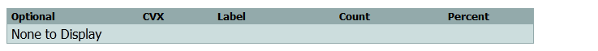This is similar to the vaccine group recommended but has no affect on the overall score. These vaccinations are not normally expected to be given but may sometimes be given.
Vaccine Group Unexpected
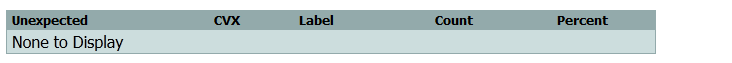These vaccines are not expected to be administered in the US as they are either not currently licensed, or is not routinely given in general practice. (For example, Anthrax is not normally expected as it is not normally given.) Vaccinations given in this category reduce the completeness score.
Quality
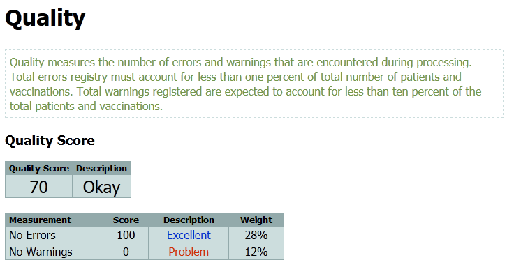Quality indicates the level of errors and warnings that were encountered while processing the submitter batch. Ideally no errors or warnings should be encountered, but in reality a certain level of warnings and even errors can be expected. The score is made of two components:
- No Errors A high score indicates that there were no errors. Each error encountered lowers this score.
- No Warnings A high score indicates that there were no warnings. Each warning encountered lowers this score.
Please note that the DQA validation process works to identify all warnings and issues within a single message and may find more than one error or warning. For this reason it is possible to have more errors or warnings than the number of messages or vaccinations.
Quality Score with Errors
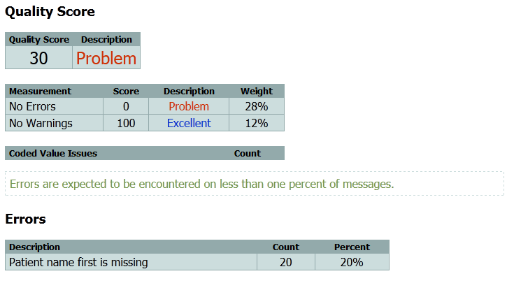In this example, the quality score is shown when every file has an error. In this case the 'No Errors' score is zero. This DQA report is configured to expect that normally less than 1% of the messages have an error. If 1% of the messages has an error the No Errors Description will be listd with a the phrase 'Problem'. The table below lists the errors encountered. In this case, every fifth message was missing the patient's first name.
Warnings
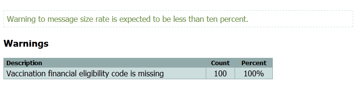Warnings are expected at a rate of no more than an average 10% warnings per message. This means that a 'Problem' score will be given if the number of warnings exceeds 10% of the message count. Please remember that a single message can easily have more than one warning so the percentage can be greater than 100%.
Timeliness
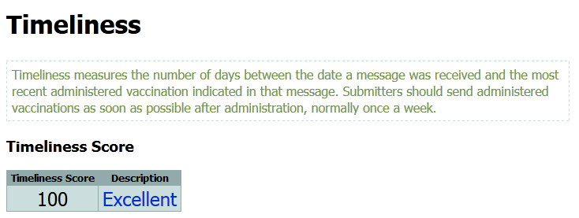Timeliness measures how quickly the DQA received a message after the vacciation was administered. The DQA examines every submitted message to determine if the latest administered vaccination. If there is none, this message is skipped (it only had historical or other data in it). Otherwise, the number of days since the last administered vaccination are tallied in these statistics. (This means that older administered vaccinations, submitted at the same time as the current administered do not affect the final score, only the most recent administered vaccination. ) Timeliness may not be accurate for initial evaluation if the amount of time between extraction and submission is longer than normal. This measure is targeted for tracking during regular and normal submission processes.
Timeliness Measures
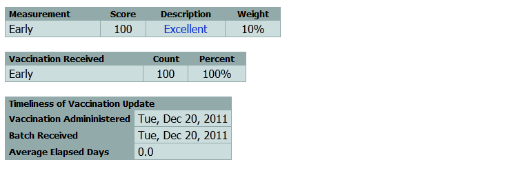Each IIS sets standards for how quckly administered vaccinations should be reported. They are broken in five categories for the purpose of reporting:
- Early The data was received much sooner than expected. The IIS appreciates and recognizes prompt and early submission.
- On Time The data was received within the time frame required by the IIS or state law.
- Late The data was received later than request by IIS or required by state law.
- Very Late The data was received much later than expected by IIS or required by state law.
- Old Data The data was not administered recently.
Codes Received
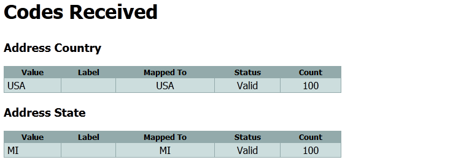A list of codes received is listed in a set of tables. If the table is not shown here, then the either that table was ignored or no data was sent.
- Value The actual value received.
- Label The label sent with it (if applicable).
- Mapped To The value it was changed to. If the same value is shown then no mapping ocurred.
- Status The status of the code.
- Valid Code is recognized and accepted as is.
- Invalid Code is not a valid or accepted code. This will often trigger an error or warning issue.
- Unrecognized Code is not recognized. Please use a CDC or IIS standard value. This will often trigger an error or warning issue.
- Deprecated Code is recognized but from an older deprecated list of codes. Please use the update value. This will often trigger a warning issue.
- Ignored Code is recognized by will be ignored. This is a rare condition but can cause a skip issue.
- Count The number of times this code was sent in this batch.